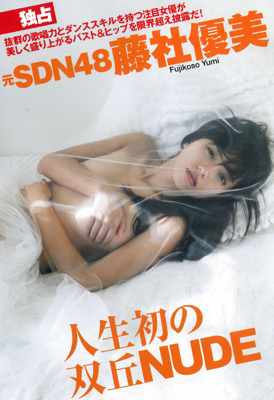

１月２２日（金）１９：００頃
５回目のゲスト出演になります
MANAGEMENT
マネージメント事業部/MANAGEMENT
Yumi Fujikoso藤社 優美
| 生年月日 | 1989.7.1 |
|---|---|
| 身長 | 153cm |
| Size | B:79cm W:59cm H:81cm F:22.5cm |
| 血液型 | B型 |
| 出身地 | 大阪府 |
| 趣味 | ダンス、美味しいものを食べる |
| 特技 | ボーリング、英語、卓球 |
元SDN48の2期メンバー。 2ndシングルから選抜メンバーとなる。2012年のSDN48解散後はソロとして、バラエティ番組や舞台、ソロライブなどで活躍中。2015年1月10日〜2015年5月15日は氣志團コンサートツアー“日本全国HALL GIG TOUR 週末大パニック！超激突”にヒロイン役で出演！
- 受賞歴
- INFORMATION
-
１月１９日発売のFLASHに、久々のグラビア出演いたしました！
SDN48を卒業し、歌手としても女優としても成長した藤社優美の姿を是非ご期待ください！
ミュージカル『薄桜鬼』新選組奇譚 1月上演決定！
この度、弊社所属の藤社優美がシリーズ累計70万本を超える大人気ゲーム「薄桜鬼」を原作としたミュージカル『薄桜鬼』最新作にヒロインの雪村千鶴役で出演することとなりました。
2016年1月に東京・大阪にて公演致します！
殺陣×ダンス×歌が融合したミュージカル『薄桜鬼』シリーズ最新作をご期待ください。ふじこなん～1年ぶりやで☆全員集合！！クリスマス前のBBQ大会～
KONAN・藤社優美が出演します。
ゲーム・トーク・握手・ツーショットイベント！
※基本的にネット予約とさせていただきます。 ※先着23名のイベントです。
お申込み／詳細は【こちらへ】
花王ビオレ「素肌つるるん体験レポート」出演中！
花王ビオレweb動画「素肌つるるんレポート」出演中
- SCHEDULE
-
- TV
- RADIO
- STAGE-LIVE
- MAGAZINE
- RELEASE
- OTHER
2016.2.24 2016年3月1日（火）23：53～ TBS「ラストキス」 2016.2.24 2016年2月25日（木）渋谷ルイードK2 LIVE 2016.1.30 2/28（日） 六本木Morph-Tokyo LIVE 2016.1.30 2/25（木） 渋谷ルイードK２ LIVE 2015.11.06 11/13 ラジオ日本「６０ＴＲＹ部」出演 20:00〜20:30頃 2015.10.22 10/22 ミュージカル『薄桜鬼』新選組奇譚に出演決定！ 2015.10.05 10/05 花王「ビオレweb動画」出演 2015.08.21 08/21 ラジオ日本「６０ＴＲＹ部」出演18:00〜 2015.07.29 07/29 テレビ東京「紺野、今夜踊るってよ」出演 25:30〜25:35 2015.06.10 06/13 表参道GROUND「Masami Kouchi Final Stage 〜the grateful finale〜」ゲスト出演 17：30〜 2015.06.08 06/10 渋谷ルイードK2「SHIBUYA GIRLS EMOTION Vol.13」出演 17：30〜 2015.05.24 05/24 六本木 morph-tokyo「Club INSPIRE VJ Gou Presents Event」出演 14：00〜 2015.05.21 05/21「アメスタ」出演 20：00〜21：00 2015.05.15 05/15 氣志團現象2015 日本全國HALL GIG TOUR「週末大パニック!超激突」出演 鹿児島・鹿児島市民文化ホール 第二ホール 2015.05.05 05/05 氣志團現象2015 日本全國HALL GIG TOUR「週末大パニック!超激突」出演 大分・ホルトホール大分 大ホール 2015.05.04 05/04 氣志團現象2015 日本全國HALL GIG TOUR「週末大パニック!超激突」出演 熊本・熊本県立劇場 演劇ホール 2015.04.26 04/26 氣志團現象2015 日本全國HALL GIG TOUR「週末大パニック!超激突」出演 高知・須崎市立市民文化会館 2015.04.25 04/25 氣志團現象2015 日本全國HALL GIG TOUR「週末大パニック!超激突」出演 愛媛・西予市宇和文化会館 2015.04.18 04/18 氣志團現象2015 日本全國HALL GIG TOUR「週末大パニック!超激突」出演 茨城・龍ケ崎市文化会館 2015.04.17 04/17 氣志團現象2015 日本全國HALL GIG TOUR「週末大パニック!超激突」出演 福島・いわき芸術文化交流館アリオス 大ホール 2015.04.12 04/12 氣志團現象2015 日本全國HALL GIG TOUR「週末大パニック!超激突」出演 山梨・東京エレクトロン韮崎文化ホール・大ホール 2015.04.11 04/11 氣志團現象2015 日本全國HALL GIG TOUR「週末大パニック!超激突」出演 岐阜・多治見市文化会館 2015.04.08 04/08 フジテレビ「TOKIOカケル」出演 方言女子 出演 2015.04.07 04/07 恵比寿club aim「それぞれ歩いてく」出演 18：00〜 2015.04.06 04/06「アメスタ」出演 18：00〜19：00 2015.04.04 04/04 氣志團現象2015 日本全國HALL GIG TOUR「週末大パニック!超激突」出演 長野・ホクト文化ホール・中ホール 2015.04.03 04/03 氣志團現象2015 日本全國HALL GIG TOUR「週末大パニック!超激突」出演 富山・クロスランドおやべ 2015.03.28 03/28 氣志團現象2015 日本全國HALL GIG TOUR「週末大パニック!超激突」出演 群馬・桐生市市民文化会館 2015.03.21 03/21 氣志團現象2015 日本全國HALL GIG TOUR「週末大パニック!超激突」出演 愛知・日本特殊陶業市民会館 2015.03.20 03/20 氣志團現象2015 日本全國HALL GIG TOUR「週末大パニック!超激突」出演 大阪・オリックス劇場 2015.03.15 03/15 氣志團現象2015 日本全國HALL GIG TOUR「週末大パニック!超激突」出演 東京・渋谷公会堂 2015.03.14 03/14 氣志團現象2015 日本全國HALL GIG TOUR「週末大パニック!超激突」出演 東京・渋谷公会堂 2015.03.12 03/12 フジテレビ「問題のあるレストラン」出演 2015.03.12 03/12「Shibuya Singer Collection Vol.5」出演渋谷 RUIDO K2 18:00〜 2015.03.07 03/07 氣志團現象2015 日本全國HALL GIG TOUR「週末大パニック!超激突」出演 秋田・大館市民文化会館 大ホール 2015.03.01 03/01 氣志團現象2015 日本全國HALL GIG TOUR「週末大パニック!超激突」出演 広島・アステールプラザ 大ホール 2015.02.28 02/28 氣志團現象2015 日本全國HALL GIG TOUR「週末大パニック!超激突」出演 香川・サンポートホール高松 2015.02.26 02/26 テレビ朝日「全力坂」出演25:20～25:26 2015.02.22 02/22 氣志團現象2015 日本全國HALL GIG TOUR「週末大パニック!超激突」出演 新潟・テルサ 2015.02.21 02/21 氣志團現象2015 日本全國HALL GIG TOUR「週末大パニック!超激突」出演神奈川・厚木市文化会館 大ホール 2015.02.17 02/17 テレビ朝日「全力坂」出演25:20～25:26 2015.02.15 02/15 氣志團現象2015 日本全國HALL GIG TOUR「週末大パニック!超激突」出演滋賀・守山市民ホール 大ホール 2015.02.14 02/14 氣志團現象2015 日本全國HALL GIG TOUR「週末大パニック!超激突」出演京都・文化パルク城陽プラムホール 2015.02.12 02/12 氣志團現象2015 日本全國HALL GIG TOUR「週末大パニック!超激突」出演兵庫・たつの市総合文化会館 赤とんぼ文化ホール 2015.02.11 02/11 氣志團現象2015 日本全國HALL GIG TOUR「週末大パニック!超激突」出演福岡・福岡市民会館 2015.02.08 02/08 氣志團現象2015 日本全國HALL GIG TOUR「週末大パニック!超激突」出演三重・四日市市文化会館 第１ホール 2015.02.07 02/07 氣志團現象2015 日本全國HALL GIG TOUR「週末大パニック!超激突」出演静岡・静岡市民文化会館 中ホール 2015.02.06 02/06 ラジオ日本「６０ＴＲＹ部」出演18:00〜
- BIOGRAPHY
-
- TV
- RADIO
- STAGE
- DISCO
- MAGAZINE
- CM
- OTHER
2015.05.14 フジテレビ「TOKIOカケル」方言女子 出演 2015.04.08 フジテレビ「TOKIOカケル」方言女子 出演 2015.03.12 フジテレビ「問題のあるレストラン」出演 2015.02.26 テレビ朝日「全力坂」出演 2015.02.17 テレビ朝日「全力坂」出演 2015.02.06 ラジオ日本「６０ＴＲＹ部」出演 2015.04.18 氣志團現象2015 日本全國HALL GIG TOUR「週末大パニック!超激突」出演／ 茨城・龍ケ崎市文化会館 2015.04.17 氣志團現象2015 日本全國HALL GIG TOUR「週末大パニック!超激突」出演／ 福島・いわき芸術文化交流館アリオス 大ホール 2015.04.12 氣志團現象2015 日本全國HALL GIG TOUR「週末大パニック!超激突」出演／ 山梨・東京エレクトロン韮崎文化ホール・大ホール 2015.04.11 氣志團現象2015 日本全國HALL GIG TOUR「週末大パニック!超激突」出演／ 岐阜・多治見市文化会館 2015.04.07 恵比寿club aim「それぞれ歩いてく」出演 2015.04.04 氣志團現象2015 日本全國HALL GIG TOUR「週末大パニック!超激突」出演／ 長野・ホクト文化ホール・中ホール 2015.04.03 氣志團現象2015 日本全國HALL GIG TOUR「週末大パニック!超激突」出演／ 富山・クロスランドおやべ 2015.03.28 氣志團現象2015 日本全國HALL GIG TOUR「週末大パニック!超激突」出演／ 群馬・桐生市市民文化会館 2015.03.21 氣志團現象2015 日本全國HALL GIG TOUR「週末大パニック!超激突」出演／ 愛知・日本特殊陶業市民会館 2015.03.20 氣志團現象2015 日本全國HALL GIG TOUR「週末大パニック!超激突」出演 ／大阪・オリックス劇場 2015.03.15 氣志團現象2015 日本全國HALL GIG TOUR「週末大パニック!超激突」出演 ／東京・渋谷公会堂 2015.03.14 氣志團現象2015 日本全國HALL GIG TOUR「週末大パニック!超激突」出演／ 東京・渋谷公会堂 2015.03.12 「Shibuya Singer Collection Vol.5」出演／ 渋谷 RUIDO K2 2015.03.07 氣志團現象2015 日本全國HALL GIG TOUR「週末大パニック!超激突」出演 ／秋田・大館市民文化会館 大ホール 2015.03.01 氣志團現象2015 日本全國HALL GIG TOUR「週末大パニック!超激突」出演／ 広島・アステールプラザ 大ホール 2015.02.28 氣志團現象2015 日本全國HALL GIG TOUR「週末大パニック!超激突」出演／ 香川・サンポートホール高松 2015.02.22 氣志團現象2015 日本全國HALL GIG TOUR「週末大パニック!超激突」出演／ 新潟・テルサ 2015.02.21 氣志團現象2015 日本全國HALL GIG TOUR「週末大パニック!超激突」出演／ 神奈川・厚木市文化会館 大ホール 2015.02.15 氣志團現象2015 日本全國HALL GIG TOUR「週末大パニック!超激突」出演 ／滋賀・守山市民ホール 大ホール 2015.02.14 氣志團現象2015 日本全國HALL GIG TOUR「週末大パニック!超激突」出演／ 京都・文化パルク城陽プラムホール 2015.02.12 氣志團現象2015 日本全國HALL GIG TOUR「週末大パニック!超激突」出演／ 兵庫・たつの市総合文化会館 赤とんぼ文化ホール 2015.02.11 氣志團現象2015 日本全國HALL GIG TOUR「週末大パニック!超激突」出演／福岡・福岡市民会館 2015.02.08 氣志團現象2015 日本全國HALL GIG TOUR「週末大パニック!超激突」出演／三重・四日市市文化会館 第１ホール 2015.02.07 氣志團現象2015 日本全國HALL GIG TOUR「週末大パニック!超激突」出演／静岡・静岡市民文化会館 中ホール 海のルアーフィッシング専門誌「SALTY」5月号 出演 海のルアーフィッシング専門誌「SALTY」3月号 出演 海のルアーフィッシング専門誌「SALTY」2月号 出演 2015.04.06 「アメスタ」出演
-
 Mari Henmi辺見 マリ
Mari Henmi辺見 マリ -
 Emiri Henmi辺見 えみり
Emiri Henmi辺見 えみり -
 Yoko Takahashi高橋 洋子
Yoko Takahashi高橋 洋子 -
 Noriko Watanabe渡辺 典子
Noriko Watanabe渡辺 典子 -
 Kazunari Moriwaki森脇 和成
Kazunari Moriwaki森脇 和成 -
 Yumi Fujikoso藤社 優美
Yumi Fujikoso藤社 優美 -
 Satoko Morimoto森本 聡子
Satoko Morimoto森本 聡子 -
 Hiroko Saito斎藤 寛子
Hiroko Saito斎藤 寛子 -
 Akari Nakamuta中牟田 あかり
Akari Nakamuta中牟田 あかり -
 ボビー・ジュードBobby Judo
ボビー・ジュードBobby Judo -
 ミルベゼmille baisers
ミルベゼmille baisers -
 Sena Yamazaki山崎 汐南
Sena Yamazaki山崎 汐南 -
 Miho Akiyama秋山 美帆
Miho Akiyama秋山 美帆 -
 Chiaki Oikawa及川 千彰
Chiaki Oikawa及川 千彰 -
 Yuya Oshima大島 祐也
Yuya Oshima大島 祐也 -
 Yukari Omuro大室 由香利
Yukari Omuro大室 由香利 -
 Ryuji Kosaka小坂 竜士
Ryuji Kosaka小坂 竜士 -
 Miyuki Tanemura種村 幸
Miyuki Tanemura種村 幸 -
 Misaki Fujihara藤原 未砂希
Misaki Fujihara藤原 未砂希 -
 Nana Hosoda細田 奈那
Nana Hosoda細田 奈那 -
 Miori Yoshimoto葭本 未織
Miori Yoshimoto葭本 未織 -
 Mai_Kawamura河村 舞
Mai_Kawamura河村 舞 -
 Miyake Hina三宅 妃那
Miyake Hina三宅 妃那 -
 Kosono Tsukasa小園 司
Kosono Tsukasa小園 司 -
 Ueda Mayumi植田 麻友美
Ueda Mayumi植田 麻友美 -
 Nakano Ryoko中野 涼子
Nakano Ryoko中野 涼子